10 концептов нового логотипа. Отправные точки: текущая айдентика (ласточка, кинокамера, граффити), афиши клуба (советское кино, Эггерс, «Асса», «Сумерки») и дух лофта. Старые версии — энергичные, но читаются как логотип группы из 2010-х: много шума, мало «кино». Здесь — десять направлений от строгого минимализма до атмосферы показа. Кириллица в макетах набрана корректно; любой концепт можно довекторить в 1:1.
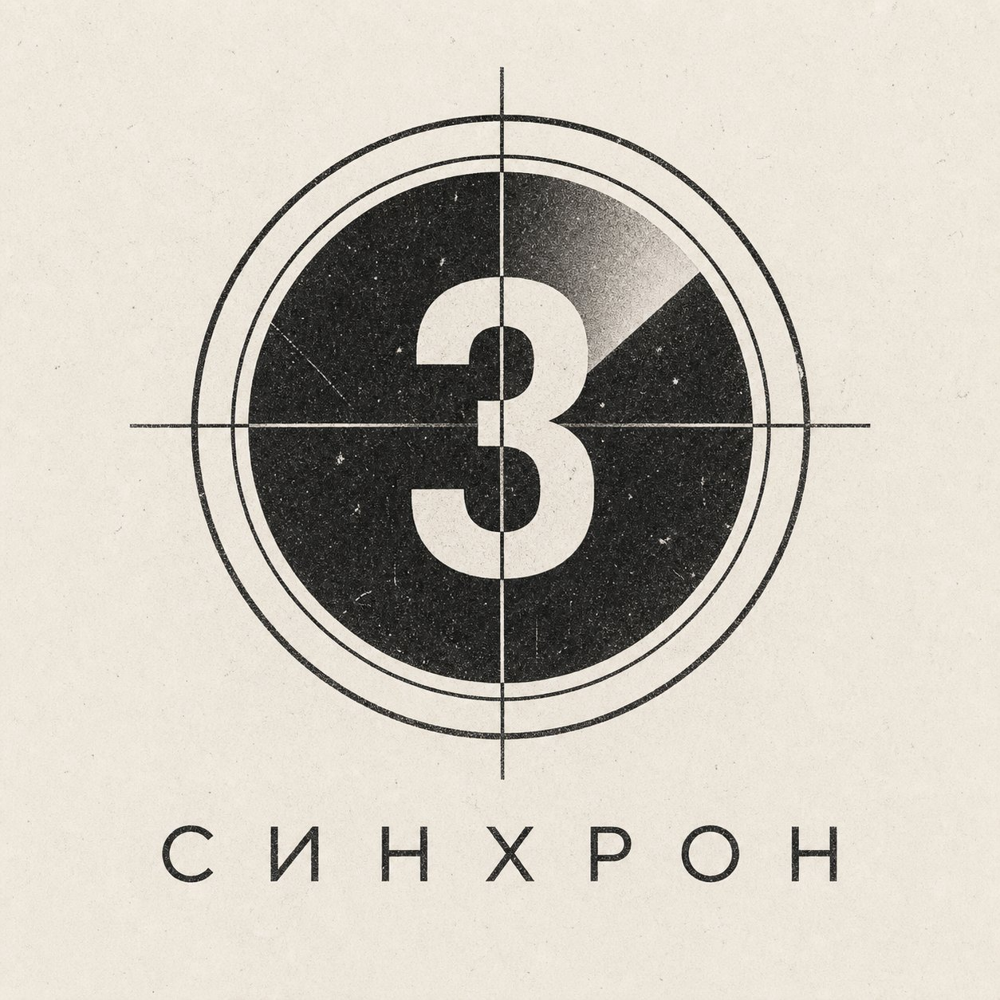
Академическая лидер-заставка «3‑2‑1» с радарной стрелкой, зерном и царапинами плёнки. Самый универсальный символ кино: считается за секунду. Круг отсчёта работает и как буква «С».
классика · ч/б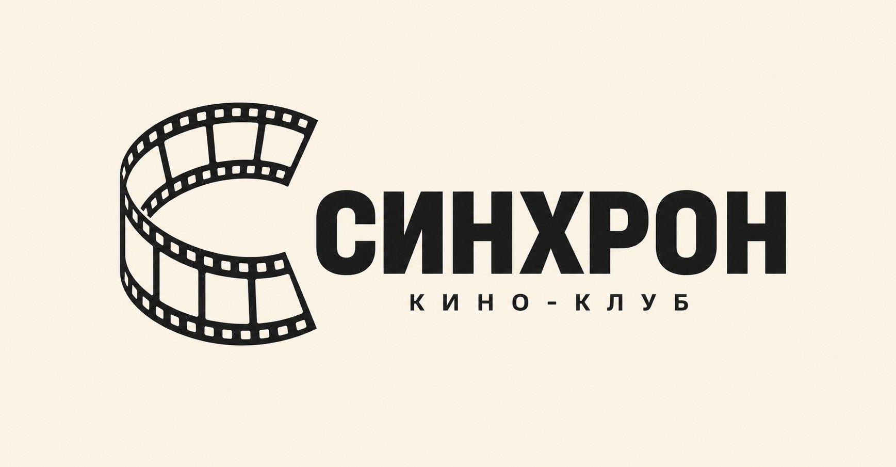
35‑мм лента с перфорацией, свёрнутая в букву «С», плюс чистый гротеск и подпись «кино‑клуб». Минимализм, который не разваливается ни в аватарке 48px, ни на афише А2.
минимализм · вектор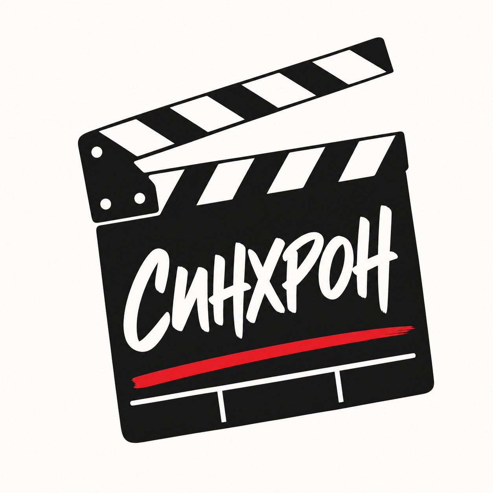
Клэпборд с рукописной надписью и одной красной чертой. Хлопушка — это «начало дубля», момент синхронизации звука и картинки. Дерзко, но аккуратно.
знак · красный акцент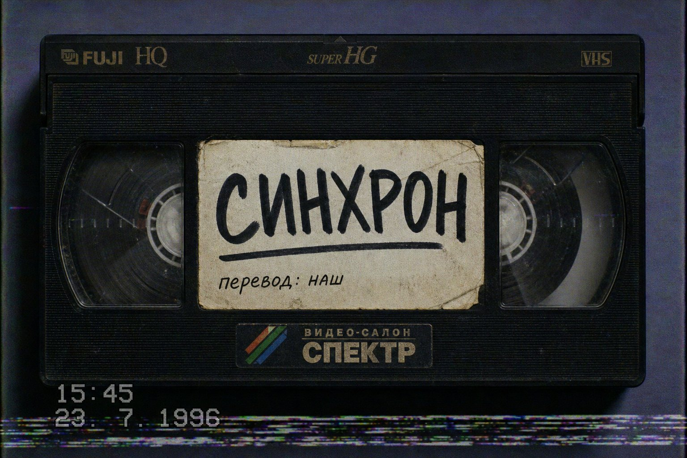
Кассета с затёртой наклейкой, надписанной маркером, и таймстампом 1996 года. Прямая отсылка к закадровому переводу и видесалонам — к самой культуре «синхронов». Идеально для мерча.
ностальгия · 90‑е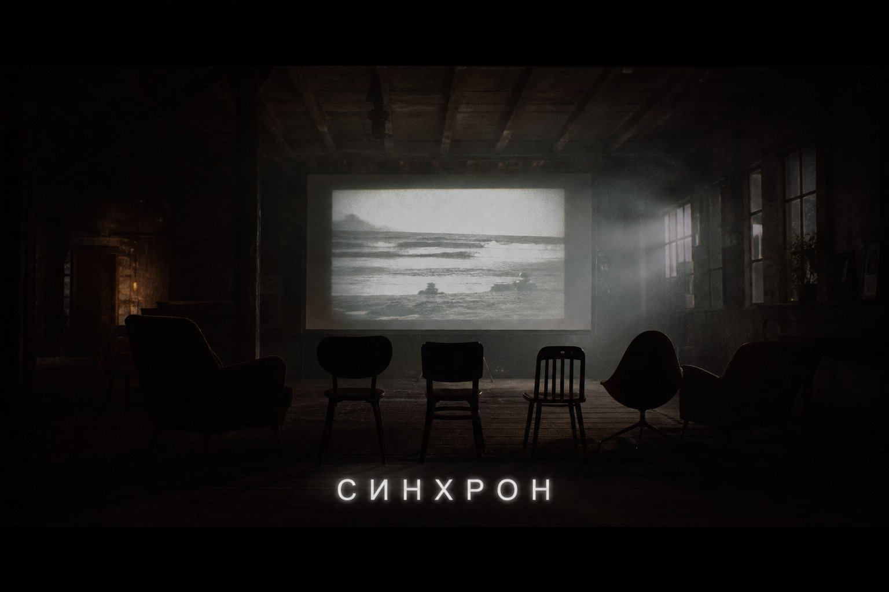
Логотип как вшитые субтитры поверх кадра из вашего лофта: разнобойные стулья, луч, экран. Клуб — это «голос» фильма, и субтитр это буквально проговаривает.
атмосфера · кадр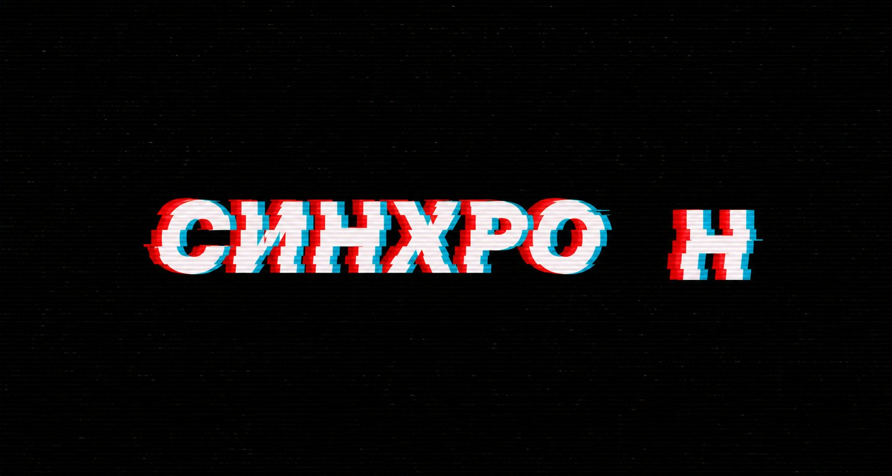
Глитч: красно‑голубое расхождение слоёв, а последняя «Н» отстаёт, как звук от губ в плохом дубляже. Ироничная игра с самим словом «синхрон». Сильно для постеров и футболок.
глитч · ирония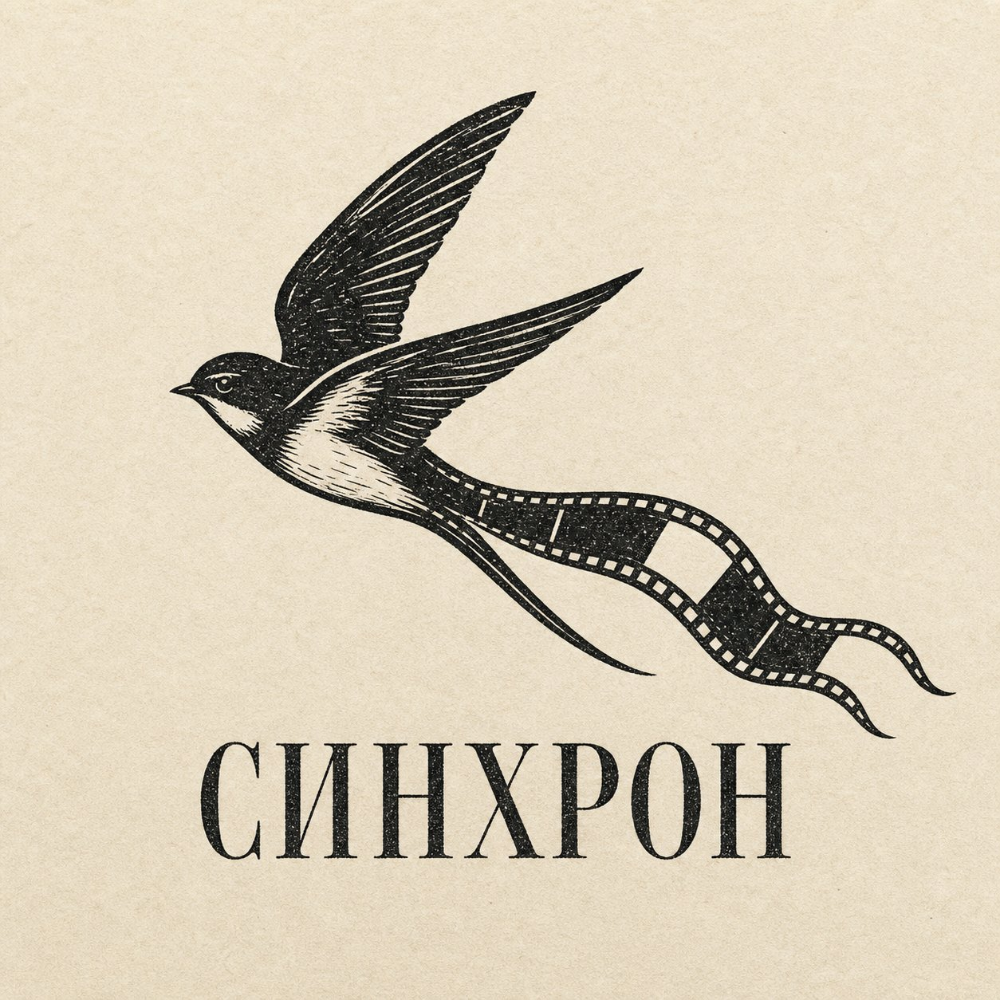
Преемственность со старым лого: ласточка остаётся символом клуба, но её хвост — лента плёнки, а стиль — линогравюра «бумага и тушь» (привет вашему же фильму «Спичка»). Тихо, интеллигентно, вручную.
преемственность · графика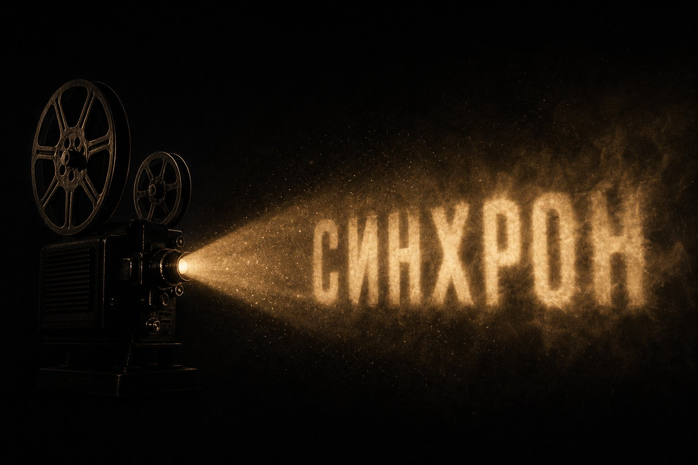
Слово СИНХРОН соткано из света и пыли в луче старого проектора. Тот самый момент, когда в лофте гаснет свет и начинается показ. Тёплый янтарный монохром.
атмосфера · свет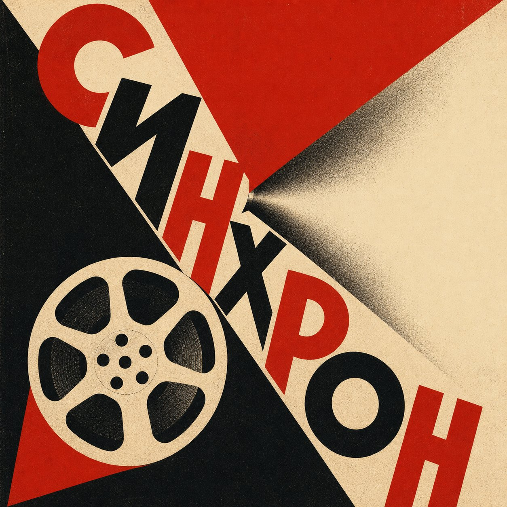
Диагональ, красный клин, катушка и геометрическая кириллица в духе Штенбергов и Родченко. Логотип‑афиша для «Сезона советского кино» и всего клуба целиком.
авангард · СССР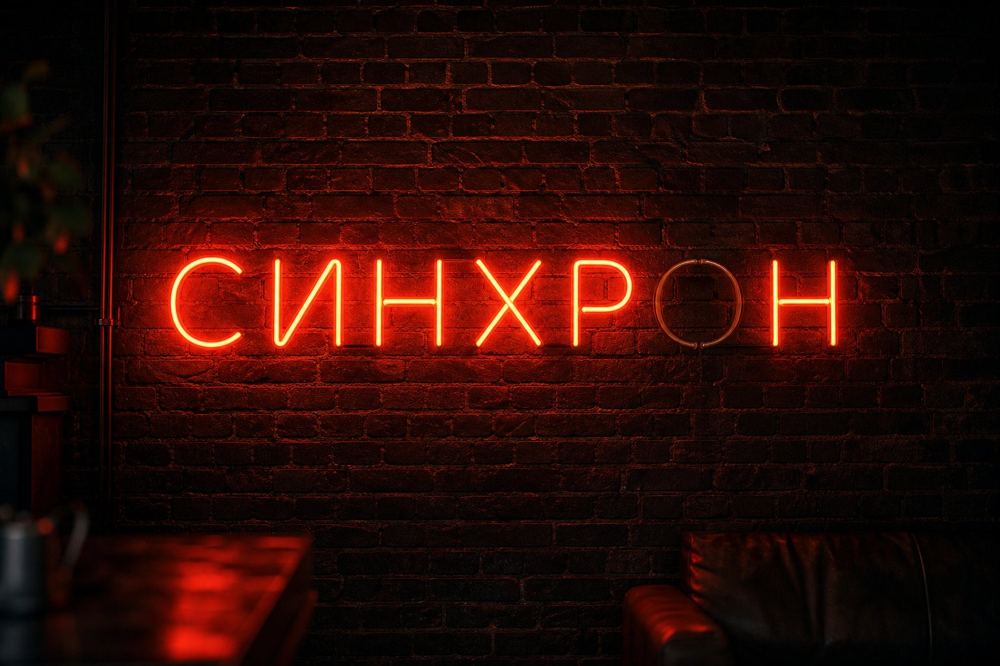
Неоновая вывеска на кирпиче, причём «О» горит вполнакала — опять метафора сбившегося синхрона. Живой, ночной, «наш лофт»-вайб для обложек и стен клуба.
вывеска · ночь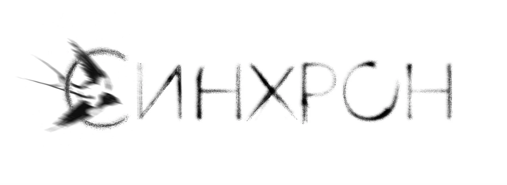
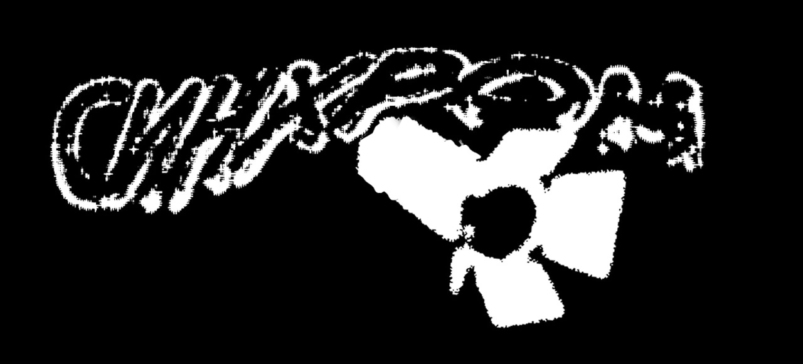
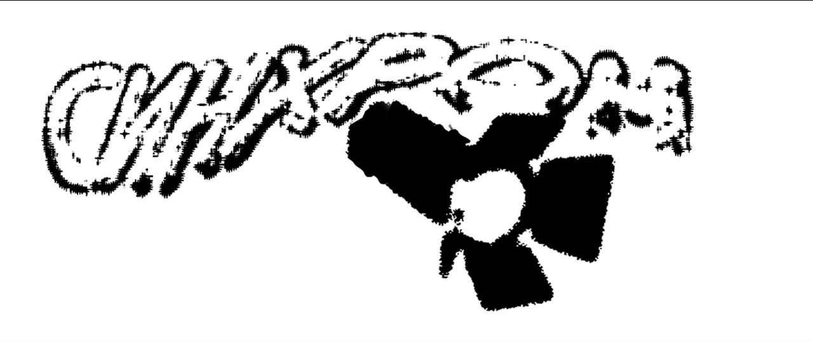
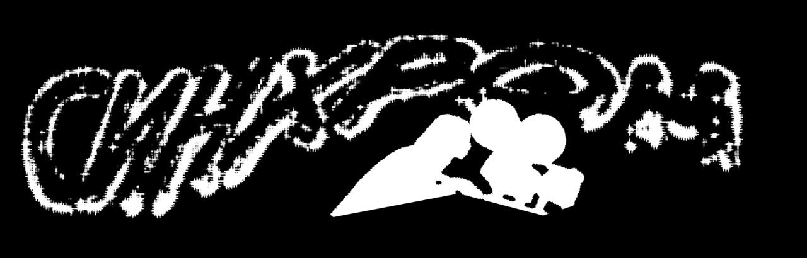